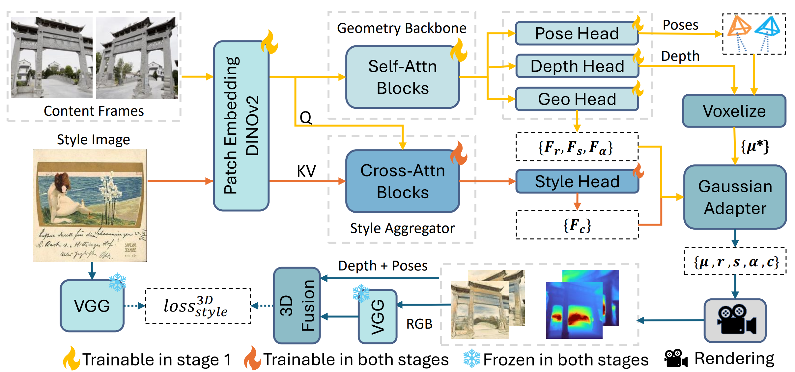
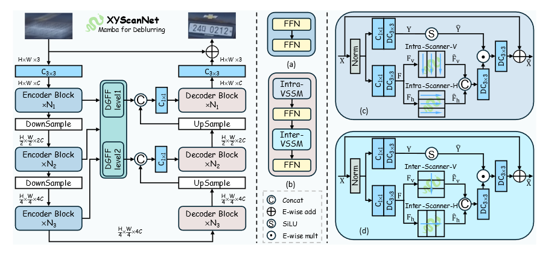

Hanzhou Liu (刘瀚舟)

Howdy! I am a 5th-year Ph.D. student in Computer Engineering at Texas A&M University.
My research interests and knowledge scope include:
- LLM post-training and tool-augmented reasoning
- Multimodal models, particularly for video generation and visual understanding
- Computer vision, including 3D vision and generation
I am actively seeking full-time opportunities for 2027. If you are aware of relevant openings, please feel free to contact me at heyhanzhou@gmail.com.
- [05/2026] 🎉 I am joining Amazon Store as an applied scientist intern, supervised by Rui Song, working on LLM post-training. Let us have a coffee chat in Seattle! New
- [01/2026] 🎉 Our paper Stylos on feed-forward 3D stylization is accepted by ICLR 2026 (Scores 8-8-6-6, Top 1.3%).
- [08/2025] 🎉 I am joining the Urban Resilience Lab as a research assistant, supervised by Ali Mostafavi, working on cross-table geospatial reasoning.
- [04/2025] 🎉 XYScanNet has been accepted by NTIRE CVPR 2025. See you in Nashville!
- [02/2024] 🎉 Mamba4Rec has been selected as the Best Paper Award for KDD'24 RelKD Workshop.
ICLR 2026 (8-8-6-6)

Stylos couples VGGT with Gaussian Splatting for cross-view style transfer,
introducing a voxel-based style loss to ensure multi-view consistency.
NTIRE CVPR 2025

XYScanNet maintains competitive distortion metrics and significantly improves perceptual performance.
Experimental results show that XYScanNet enhances KID by 17% compared to the nearest competitor.
- 2021.08 - now, Texas A&M University, PhD in Computer Engineering.
- 2019.08 - 2021.06, Texas A&M University, MS in Computer Engineering.
- 2014.08 - 2018.06, Jilin University, BS in Electrical Engineering.
- 2024.07, Mamba4Rec, invited talk at Uber.
- 2026, Reviewer, NeurIPS 2026.
- 2026, Reviewer, Transactions on Consumer Electronics (TCE).
- 2025, Reviewer, NTIRE Workshop in conjunction with CVPR 2025.
- 2024, Reviewer, IEEE/CVF Winter Conference on Applications of Computer Vision (WACV).
- 2024, Reviewer, The Conference on Information and Knowledge Management (CIKM).